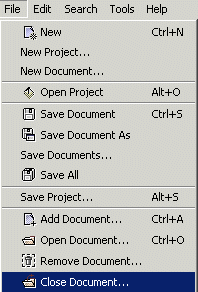
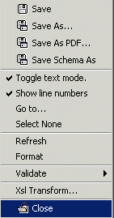

.
.
Select the tab corresponding to the document to close. Select File>Close Document... The document corresponding to the selected tab gets closed and the tab gets removed. To close all documents select File>Close All Documents.. .
|
 |
To close a document from the toolbar select the Close Document icon.
Close a document from the pop-up menu in a xml document with the Close menu item.
|
 |